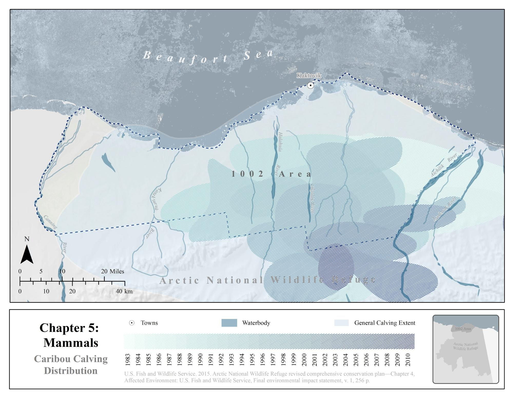
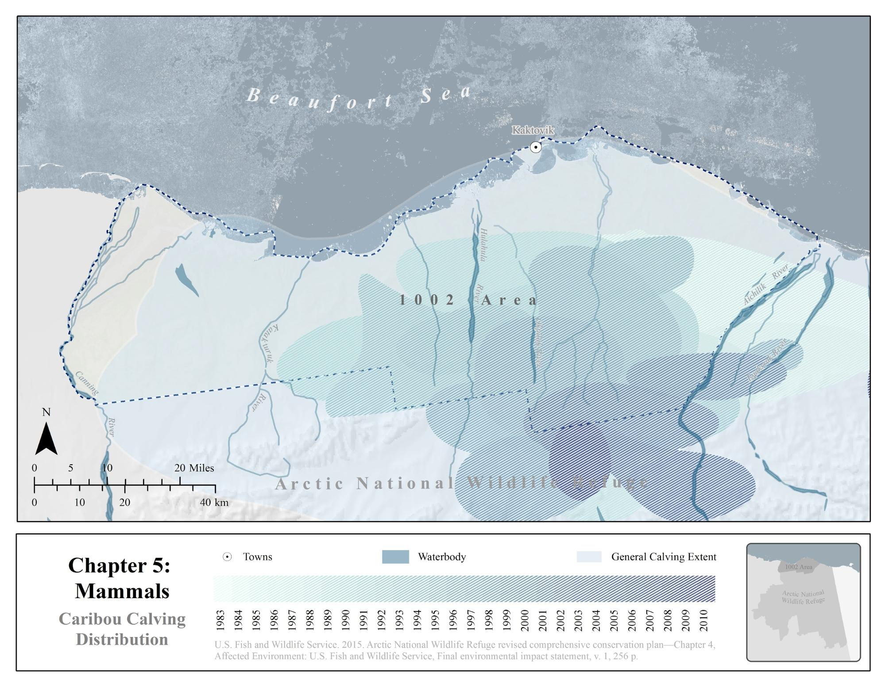

The general process of digitizing one map includes five steps: crop the image, georeference, image classification, extract the shapes, and smooth the polygons.
I included both R and ArcPy code in the descriptions below. Note that you can automate the entire process using batch processing and ModelBuilder in ArcMap.
Step 1: Crop the image
If you only have one historic map and it is in the correct extent you hope to digitize, you are welcome to skip to Step 2. Otherwise, there is a little preparation work to make sure you are only digitizing your map in your area of interests which will also save you a lot of time. There are a lot of graphic design software tools for editing images, for example, Adobe Creative Cloud, IrfanView, Paint, Inkscape, etc. I use the open source tools available in R.You can adjust contrast, lightness, and saturation first using an R package, magick, then crop your image, split images into separate files, and export them into different formats using another package gdalUtils.
Step 2: Georeference the images
Scanned maps and PDFs of historical data usually do not contain spatial reference information. Hence you will need to georeference your map before digitizing it. In this step, I will use the georeference toolbar in ArcMap. You can add a base map layer or some other dataset with coordinates to get the context when you assign the coordinate system to the map frame.
If you have a series of maps of the same location, saving the links to a text file will be very helpful. You can then use the .txt file in the warp from file tool for batch processing, and then write ArcPy code or ModelBuilder model to automate the process. Here is the example of using ArcPy, you can replace the names of the files and run it in the Python Window in ArcCatalog:
Step 3: Iso cluster and maximum likelihood classification
Iso cluster performs clustering of the multivariate data in the list of input raster. The specified number of classes value is the maximum number of the clusters that can result from the clustering process. The optimal number of classes should be greater than two but is usually found after testing some numbers, analyzing the resulting clusters and retrying the function. Maximum likelihood classification tool will then use the signature file produced from Iso Cluster to produce the optimal number of classes in an output raster.
If you have a series of maps using the same color theme, the shape you hope to extract from the maps will have the same value in each final output raster. Here is the code in ArcPy:
Step 4: Extract the shapes
You now have the output raster from ArcMap, the next step is to extract the shapes. I recommend you use focal statistics tools before you use raster calculator to extract them into a new raster file because they usually have rough edges. For example, you can use focal statistics majority and circle neighborhood to smooth the shapes. Depending on the data you have, you can try with a smaller radius but do it multiple times until you get a satisfying result. After this, you can use raster calculator to extract the shapes you want into a new raster.
Step 5: Export and Smooth polygon
If you want the final result to be shapefiles, here is one more step after you get the raster files in using raster to polygon tool. You can then play with the smooth polygon tool to smooth the boundary.
Here are the smoothed polygons of caribou calving extent.
If you finished all the steps, congratulations, you have successfully digitized your maps! Here is a map showing the historical distribution of caribou in one map.
Other options
This blog is only an exploratory approach to demonstrate how to digitize non-georeferenced maps into geospatial datasets. I choose to georeference first and then do classification in ArcMap. There are still a lot of other ways, for example, you can extract shapes into vectors using Image Trace tool in Adobe Illustrator and then georeference the vector data in ArcMap. That will make the editing process easier but might be harder to automate if you have a series of maps.


 
